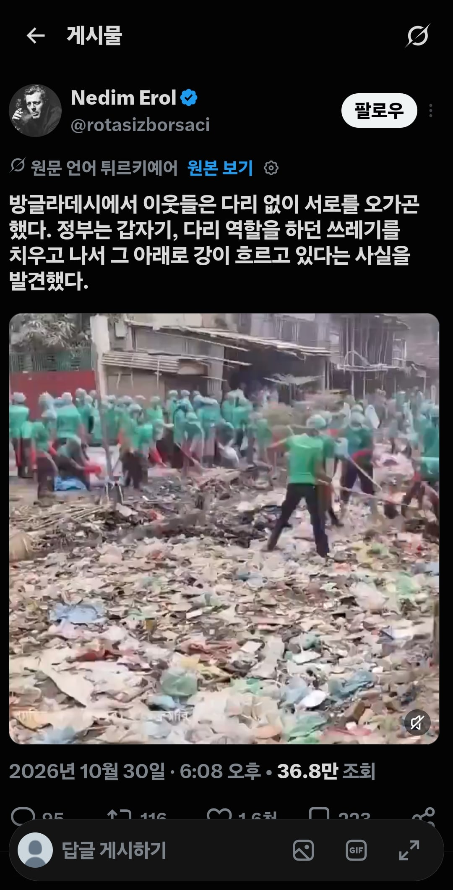

여러 의미로 대단하다
세균들이 죽겠다 미친놈들아....
헐
수질오염 때문에 남아시아 지역에서 멸종된 민물고기들 꽤 많으려나
오지게 많을듯..
🐸 🐟
강 수심도 존나 깊네 ㅋㅋㅋㅋㅋ
아니 아 시발 이게 뭔
아니 저정도 수심인데 쓰레기가 얼마나 꽉찼으면 밟아도 안빠지네 ㅋㅋㅋㅋㅋㅋㅋㅋㅋㅋㅋㅋㅋ
인도보다 더한놈들이네 ㅋㅋ
쓰레기봉지 100리터로 몇개썼을거같냐 한 200개?
주식졷밥인 이유가 있구나
2만장 썼어도 안놀라울듯
생각이란걸 걍 하지말자
와 저길 들어가서 치우네
저래도 며칠 못간다고 함
"아 버려도 돼
어차피 와서 치우던데???"
이럴듯
가슴까지 수심이 ㅋㅋ 미친
쓰레기로 간척사업하냐?ㅋㅋㅋㅋ
수심이 저리 깊은데 쓰레기가 얼마나 들어차있으면 쓰레기 위를 밟고도 뜨는구나;
못사는나라 사람들 검사해보면 다 병걸려있을듯..
이미 다뒤졌고 살아남은 사람들은 의외로 개쎌수도
원상복구된 미래가 보인다
이런거보면 한국에 태어난것에 무한한 감사를 느낀다 ..
80년댜 까지 한강은 중금속으로 오염됬은데 매년 수천억원씩 써가면서 오수처리장짓고 오염수배출단속해서 이렇게 된거지
? 그래서 감사하다고
아 감사하지말라고!
불행하라고!
행복하지 말라고!
행복하려면... 사랑한 날... 잊어야 하잖아...
잘부르네
?
ㅋㅋㅋ 이렇게 됐으니까 감사하다고;; 병신아;;
원상복구 해도 주민들 바로 쓰레기 던진다더라ㅋㅋ
저렇게 치워도 금방 다시 쓰레기밭된다는거보면
깨진 유리창의 법칙같은것도 기본적인 민도가
있어야 하는건가싶음
복개천
3일 후 바로 다시 쓰레기다리 완성됨 ㅋㅋ
하류가 꽉막인데 저게 범람이 안됐나 ㄷㄷㄷ

걍 더러운걸로 치면 인도보다 방글라데시가 진짜던데ㅋㅋㅋ
팍팍좀 치우지 ㅈㄴ 깔짝대는거같네 ㅋㅋ
이거 보니 지구온난화 조별과제는 확실히 그른거 같다 ㅋㅋ
저정도면 손이 아니라 중장비로 해야하지 않냐?
정부가 하는데 손으로..ㄷㄷㄷ
왜 강을 만들어서 통행에 불편을 주냐!!!!
인도보다 방글라데시가 찐이더라..
저기서 수거한 쓰레기는 어따버림?
옆마을 강
저긴 저출산정책해도 안먹히더라 ㄷㄷ
주민들이 힘을 모아 다리를 만들어뒀는데 힁 ㅠㅠ
ㅋㅋㅋㅋㅋㅋㅋㅋㅋㅋㅋㅋㅋㅋㅋㅋㅋㅋㅋㅋ
여기는 다같이 치우기라도 하네 어디는 치우니까 옆에서 쓰레기 버리고 쓰레기통 놓으면 훔쳐가던데 ㅋㅋ